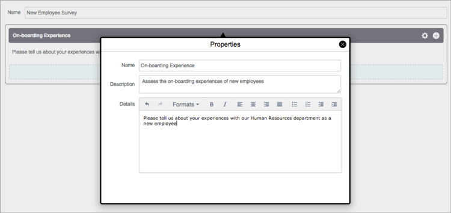
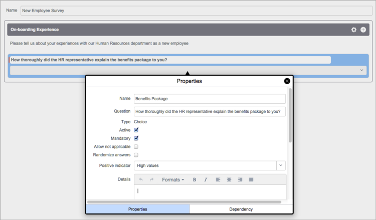
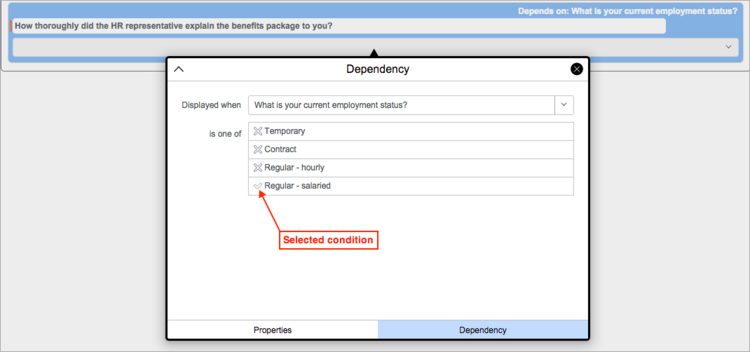
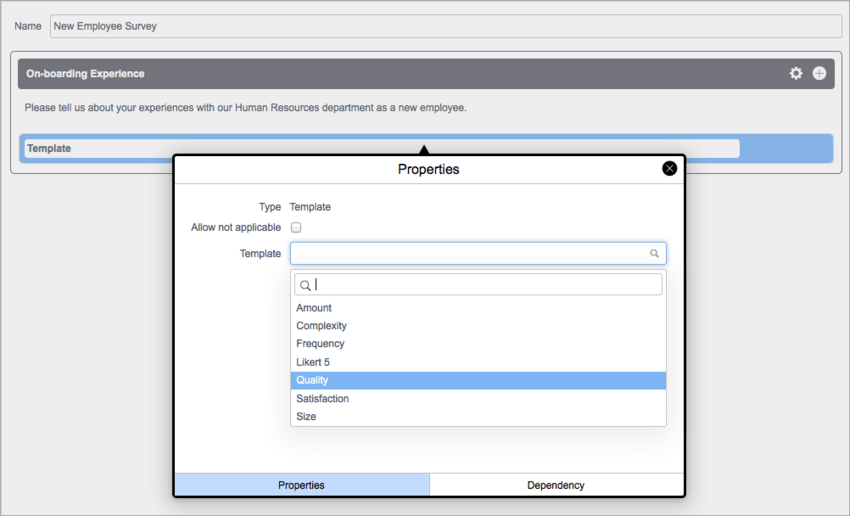
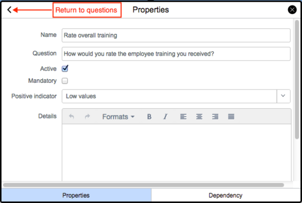

Survey Designer
| |
Note: This article applies to Fuji and earlier releases. For more current information, see Survey Designer at http://docs.servicenow.com
The ServiceNow Wiki is no longer being updated. Visit http://docs.servicenow.com for the latest product documentation. |
Contents
1 Overview
The survey designer provides a single interface that users with the survey_admin role can use to create, edit, and distribute surveys. The survey designer replaces the Survey Creator, starting with the Fuji release. If you are using Internet Explorer version 8 or earlier, the system automatically redirects you to the survey creator.
2 Designer Elements
To open the survey designer, navigate to Survey > Survey Designer. The designer contains the following elements:
2.1 Controls
Controls for the supported question data types are available in the Controls palette. Drag and drop a control onto the designer canvas to create a question of that type.
| |
|
{kind=link}
2.2 Header Bar
The header bar contains tabs that display different views and a menu of various functions.
{kind=link}
2.2.1 Views
Click one of the following tabs to change the view in the canvas:
- Design: Add categories and questions, and configure the properties of each. This is the default view of the canvas when you open the designer.
- Configuration: Create introductions and end notes for surveys, and select a signature.
- Availability: Select the survey recipients. Users and groups selected in this view receive the questions from all the survey categories.
2.2.2 Function Buttons
Point to the menu icon () in the header bar to select the following options:
{kind=link}
- Save: Saves the current survey.
- Preview: Displays a preview of the survey as it appears to the recipients.
- Publish: Distributes the survey to the selected recipients.
- Save and Publish: Saves and distributes the survey in one step.
- New survey: Opens a fresh canvas for a new survey.
- Load survey: Opens a list of existing surveys that you can select and edit.
The availability of each option depends on the status of the survey that is opened in the survey designer.
2.3 Design Canvas
New surveys open in the Design view. The survey Name field appears above the first category in the canvas. A blank question field appears in the category container.
{kind=link}
3 Creating a Survey
When you create a survey, you can create one or more categories and then add questions to each category. You can then assign the survey to individual users or groups who receive all the questions from all the categories. You can also customize each question and make it dependent on the response to another question. Create a survey using these procedures:
- Create the categories.
- Create questions within each category.
- Configure survey details, such as introductory and closing remarks and time limit.
- Select recipients for the survey.
- Publish the survey to the selected users or groups.
3.1 Creating Categories
A category represents a theme for evaluating a specific element of the survey topic and contains questions pertaining to that theme. When you create a survey, the system automatically creates a default category, using the name of the survey. You can use this category, modify it, or create additional categories as needed. To have any results, a category must contain scored questions.
For simple surveys, one category is usually enough. Consider creating additional categories to:
- Separate groups of questions into collapsible sections by category on the survey questionnaire.
- Report on category scores, which are calculated based on responses for all questions within each category.
To create or edit a category:
- Navigate to Survey > Survey Designer.
- Enter the name of the survey in the Name field.
- The system uses this name as the name of the survey and the first category.
- To configure the category, click in the gear icon in its title bar.
- The Properties dialog box appears. You can change the name of the category, add a description for it, and enter text in the Details field that introduces or explains the category to recipients.
- 
- Click the X icon to close the category properties dialog box and save your settings.
- To add a new category, click the + icon in the title bar of an existing category.
{kind=link}
3.2 Creating Questions
You can create multiple questions for each category, but each question can only be associated with one category. The data type that you select for each question determines how it can be answered by survey recipients. For information about creating template type questions, see Configuring Template Questions.
- In the Design view, drag a data type icon from the Controls palette and drop it into a category container.
- To configure the question, click in the gear icon in its title bar.
- The Properties dialog box appears for the question.
- 
- Fill in the fields, as appropriate (see table).
- To create any special conditions that must be met before the question appears on the survey, click the Dependency tab. Fill in the fields, as appropriate (see table).
- Dependent questions appear on the survey when a recipient selects a specific answer or combination of answers to another question in the same category.
- Select a question in the Displayed when field.
- The system selects the appropriate operator and displays the possible answers for the selected question.
- Select the answers that satisfy the condition.
- Selected answers are indicated by a check mark.
- 
- Click the X icon to close the question properties dialog box and save your settings.
- To add a question with the same data type as an existing question in the category, click the + icon in the title bar of the existing question.
- Drag and drop questions to change their order within a category or move them between categories.
- To delete a question, click the X icon in its title bar.
{kind=link}
{kind=link}
{kind=link}
| Field | Description | |
|---|---|---|
| Name | [Required] Name of the question. | |
| Question | The question that is displayed in surveys. Enter a clear, straightforward question that is easy to understand. | |
| Type | [Read-only] Data type selected for this question. See the table in Controls for possible data types. | |
| Active | Check box that determines whether this question is used to gather results. If a question is marked inactive, it does not appear on surveys generated after the question becomes inactive. | |
| Mandatory | Check box for requiring users to answer the question. Users cannot submit the survey until they answer all mandatory questions, which are denoted by a red field status indicator.
This field is available when the question does not have a dependency and the question data type is not Boolean with a check box option. | |
| Boolean option | Whether a check box or a Yes/No list appears as the option for the Boolean question. | |
| String option | Setting for the appearance of a string field in a question. This field is available when the question type is String. The string options are:
| |
| Min | Lowest positive whole number that users can enter or select to answer the question. This field is available when the question type is Number, Percentage, or Numeric Scale. | |
| Max | Highest positive whole number that users can enter or select to answer the question. This field is available when the question type is Number, Percentage, or Numeric Scale. | |
| Allow not applicable | Check box for including Not Applicable as an option for this question. Users can select Not Applicable if they do not have sufficient information to respond to a question. User responses of Not Applicable are excluded from results. This field is available when the question does not have a dependency and the question data type is not Boolean with a check box option. | |
| Randomize answers | Check box for displaying answer options in a random order whenever the question appears in a survey. Answer preference is sometimes influenced by the order in which answer options appear, which can result in biased results. Randomizing options can help prevent this bias.
Note: Randomizing options for certain questions may make those questions confusing for users. In general, only randomize answer options that do not follow a logical order. | |
| Positive indicator | Setting that determines whether smaller or larger numerical values equate to a good score in result calculations. Select Low values if smaller numerical values are better, such as for a question that measures the number of incidents for a vendor. Select High values if larger numerical values are better, such as for a question that measures user satisfaction on a scale of one to five. | |
| Details | Information about the question that is displayed on the survey. Include details that help users understand how to answer the question. You also can enter HTML text in this field with the WYSIWYG editor. For example, include HTML to embed links and images. | |
| Choices | Options for a question with a data type of Choice or Scale. The system automatically adds text and values that you can edit for each option. Click the + icon to add an option, or click the X icon to delete an option. By default, the system arranges options in the order established by their values. To change the order, drag and drop the options. You must have at least two options, and each option must have a unique value. Note: Value numbers also contribute to the calculations of survey response scores, which can be used by advanced survey administrators.
| |
| Dependency | ||
| Displayed when | Condition builder that hides or displays the question, depending on the answer to another question in the same category. Select an existing question from the list with a data type of Boolean, Choice, Scale, or Template. Create the condition that must exist for recipients to see the dependent question, using the is or is one of operator. The system prevents recursive dependencies between questions. For example, if Question A depends on Question B, Question B cannot depend on Question A. | |
{kind=link}
3.2.1 Configuring Template Questions
- Drag the Template data type icon into a category container.
- Click the gear icon in the question title bar to open the template properties dialog box.
- Select a predefined scale from the list.
- 
- Question entry fields appear for that template.
- Enter one or more questions that are appropriate for the template.
- Click the arrow to the right of a question to configure its properties.
- You must provide a name for each question.
- 
- Click the back arrow to return to the template properties dialog box.
- Configure the properties for the remaining questions.
- Click the X icon to close the template properties dialog box and save your settings.
{kind=link}
{kind=link}
{kind=link}
{kind=link}
3.3 Configuring a Survey
In the survey designer, click Configuration and fill in the fields, as appropriate (see table). The values you enter and select on this page are applied to the entire survey.
{kind=link}
| Field | Description |
|---|---|
| Active | Check box for enabling the distribution of this survey to recipients. |
| Anonymize responses | Check box for collecting survey responses anonymously. Recipients are not listed with survey results. |
| Description | Description of this configuration or the survey to which it is attached. |
| Introduction | Introductory content to display on surveys. You can add a welcome message or background information about the survey. |
| Signature | [Optional] Assertion that contains requirements, admonitions, or expectations related to a survey. A signature can require users to select a check box or authenticate with network credentials to acknowledge they have read the assertion. For more information, see Signatures. |
| Return URL | Destination address of a web page that is presented to users after they submit a completed survey. When a return URL is configured, any End note content is not displayed to users. |
| End note | Content that is displayed to users after they submit a completed survey. You can add a thank you message, follow-up instructions, or other applicable information. End notes are not displayed if a Return URL is specified. |
| Duration | Amount of time that recipients are given to complete this survey. Overdue surveys are marked in red in the recipient's queue. |
3.4 Selecting Recipients
- After a survey is created and configured, click Availability to determine who receives the survey.
- Anyone: Allows any user with an account on the instance to take the survey. For example, you can send users the survey URL via email.
- Specific users: Allows you to choose specific users, groups, or survey groups.
- Click Save.
{kind=link}
3.5 Publishing a Survey
You must save changes to a survey before you can publish it to the specified recipients or groups. If you want to see the survey as the recipients will see it, point to the menu icon () in the upper right of the survey designer and click Preview. When you are satisfied with your survey, click Save and Publish or Publish to distribute it. When you publish a survey, the system automatically sends email notifications to the recipients and to their managers. A link to the survey is displayed on a card in each recipient's My Assessments & Surveys portal.
4 Editing a Survey
- Navigate to Survey > Survey Designer.
- Point to the menu icon () in the survey header bar, and select Load Survey.
- Select a survey and make changes to it.
You can edit a survey even after it has been distributed, with these results:
- Added questions are available only on surveys that are distributed after this change.
- Changes to existing questions are immediately available to users before the survey is submitted or during the retake period. This includes changes to the answers, such as additional choices or changes to the data type.
- Deleted questions are also deleted from the distributed surveys in users' queues.
5 Enabling Retakes
You can configure a survey to allow recipients to resubmit their answers as many times as they like, up to the survey's due date. Results are not calculated until the survey's configured duration has elapsed. The card in the user's queue remains visible until the survey's due date and displays a button to allow retakes.
To configure an existing survey for retakes:
- Navigate to Surveys > View Surveys.
- Select a survey from the list.
- In the Survey Definition form, click the menu icon () in the header bar and and select Configure > Form Layout.
- Move the Allow retake field to the Selected list, and click Save.
- Select the Allow retake check box, and update the form.
6 Viewing Results
Survey results for each question and category are calculated automatically. If you use survey result calculations for results and scorecards, ensure that the Positive indicator field for the question is set appropriately, based on the answer options. To have any results, a category must contain scored questions.
6.1 Survey Responses
Survey results are stored in the Metric Result [asmt_metric_result] table and display the recipients' answers to each question in a category. To view these results, navigate to Survey > Survey Responses. For more information, see Viewing Survey Responses.
{kind=link}
6.2 Category Results
Category results are stored in the Assessment Category Result [asmt_category_result] table and display the overall ratings for each category based on the weighted value for each scored question. To view these results, navigate to Assessments > Results > Category Results and filter the results using the [Type.Evaluation method] [is] [Survey] condition.
{kind=link}
6.2.1 Configuring Category Weights
The system calculates results from the weight configured for each category. Weights are set to a value of 10 by default but can be changed.
To edit the weight of a survey category:
- Navigate to Survey > View Surveys and select a survey from the list.
- In the Survey Definition form, select a category from the Metric Categories related list.
- In the Survey Category form, click the menu icon () in the header bar and select Configure > Form Layout.
- Move the Weight field to the Selected list, and click Save.
- Edit the default weight value, and update the record.
6.3 Survey Scorecard
To display the Category Results scorecard for the survey:
- Navigate to Survey > View Surveys.
- Open the survey whose results you want to view.
- Under Related Links, click View Scorecard.
- The scorecard for the selected survey opens in the Category Results view.
- Select a category to view from the choice list above the chart.
For detailed information about scorecards, see Survey Scorecards.
{kind=link}